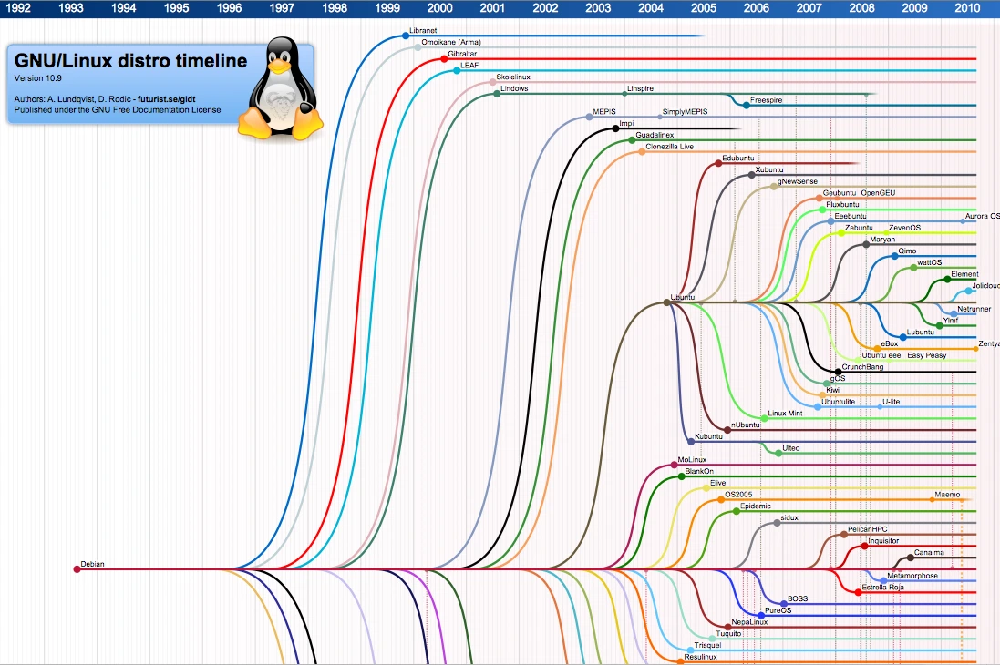

如何轻松切换到 Linux：逐步指南

为什么切换到 Linux？
Linux 不仅仅是技术高手的专属，它是一个强大、开源的操作系统，优先考虑 隐私、定制 和 稳定性。与 Windows 或 macOS 不同，Linux 不会跟踪你的活动，也不会强迫你进入专有生态系统。它是免费的，可以使用、修改和分享，得到了全球开发者社区的支持。无论你是一个关注隐私的用户、一个爱折腾的人，还是一个厌倦了臃肿软件的人，Linux 都提供了一个令人耳目一新的替代方案。
选择你的 Linux 发行版
有数百种发行版（或称“distros”）可供选择，选择合适的一个可能会让人感到不知所措。以下是快速概述：
- 基于 Debian 的发行版（例如，Ubuntu、Linux Mint）因其稳定性和广泛的软件库而非常适合初学者。
- 基于 Arch 的发行版（例如，Manjaro）适合希望获得前沿软件和更深层次定制的用户。
- Fedora 或 openSUSE 在创新和可靠性之间取得了平衡。
对于大多数新手，我们推荐 Debian——许多流行发行版的坚实基础，您可以在下面的图表中看到。一旦您选择了一个发行版，请决定一个桌面环境：
- GNOME：简洁、现代且直观（类似于 macOS）。
- KDE Plasma：高度可定制，具有类似 Windows 的感觉。
- XFCE 或 LXQt：适合旧硬件的轻量级选项。

让自己熟悉 Linux
在清空硬盘之前，在虚拟机 (VM) 中无风险地测试 Linux。像 VirtualBox 这样的工具可以让你在当前操作系统旁边运行 Linux。以下是操作步骤：
- 下载 Linux ISO（例如，Debian 或 Ubuntu）。
- 安装 VirtualBox 并创建一个新的 VM，分配资源如 RAM 和存储。
- 从 ISO 启动 VM 并通过“图形安装”选项进行安装。
切换的准备：期待什么
许多人担心 Linux 只是输入命令的终端。虽然终端功能强大，但 现代发行版提供用户友好的图形用户界面 (GUI)，用于日常任务，如浏览、编辑文件或安装软件。
双重启动：两全其美
需要 Windows 或 macOS 来运行特定应用或工作吗？双重启动 让你可以在一台机器上保留两个操作系统。
- 单驱动器设置：对你的驱动器进行分区，以分配 Linux 的空间。
- 多驱动器设置：在单独的驱动器上安装 Linux，以便于管理。
安装准备
在安装 Linux 之前，收集以下必需品：
- 一根 USB 驱动器（推荐 8GB 以上） 用于安装程序。
- 一个 外部驱动器 用于备份重要文件。
安装 Debian：逐步指南
第一步：下载正确的 Debian ISO
访问 Debian 下载页面，在“小型 CD 或 USB 闪存驱动器”标题下选择：
- amd64：适用于大多数 64 位 Intel/AMD 系统。
- arm64：适用于较新的基于 ARM 的设备（例如，Raspberry Pi 4）。
- i386：适用于较旧的 32 位机器（今天很少见）。
第二步：创建可启动 USB
对于 Windows
- 安装 Rufus (在此下载)。
- 插入 USB 驱动器并打开 Rufus。
- 选择你下载的 Debian ISO。
- 确保分区方案设置为 MBR，目标系统为 BIOS 或 UEFI。
- 点击 开始，等待过程完成。
对于 macOS
- 打开 终端。
- 使用
diskutil命令列出你的驱动器：diskutil list - 卸载 USB 驱动器（将
diskN替换为你的 USB 驱动器编号）：diskutil unmountDisk /dev/diskN - 使用
dd命令创建可启动 USB（相应地替换path/to/debian.iso和diskN）：sudo dd if=path/to/debian.iso of=/dev/rdiskN bs=1m - 等待过程完成，然后弹出 USB 驱动器：
diskutil eject /dev/diskN
第三步：从 USB 启动
- 重启你的计算机并按下 BIOS/UEFI 键（通常是 F2、F12、Del 或 Esc）。
- 在启动菜单中，优先选择 USB 驱动器。
- 保存更改并退出以启动 Debian 安装程序。
第四步：安装 Debian
- 选择 图形安装 以进行引导设置。
- 按照提示选择语言、位置和创建用户帐户。
- 当提示你进行 分区 时，你有以下选项：
-
引导 - 使用整个磁盘： 清除整个磁盘并将 Debian 安装为唯一操作系统。适合新用户或专用 Linux 设置。
-
引导 - 使用整个磁盘并设置加密 LVM： 将 Debian 安装为唯一操作系统，同时通过 LVM（逻辑卷管理器）启用全盘加密。非常适合保护敏感数据。
-
手动： 适合高级用户：创建、调整大小或保留分区（例如，与 Windows 双重启动）。需要对磁盘布局有一定了解。
- 当提示你进行 软件选择 时：选择你想要的桌面环境（GNOME 或 KDE Plasma）和可选工具（例如，SSH 服务器、打印服务器）。
- 完成安装并重启。